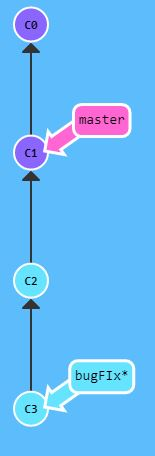
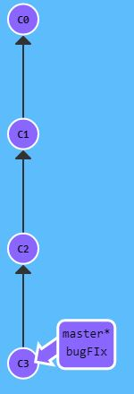

Master Branch
The master branch in git is the “master” or “published” version of a project. You can have both a local and remote master branch where the remote master branch is usually referred to as the origin. When you begin making commits, it will default to the master branch. The master branch becomes more relevant when you start making other branches. For example, let’s say I want to work on a bug fix, but I don’t want to affect the master branch while I’m ironing out the bug fix. I create a bugFix branch which separates from the master branch. I can do all of my bugFix work here and then when it’s ready I’ll merge it back into the master branch. The advantage of this is that it creates a separate development area that can be modified more freely and activated or deactivated more easily then if I just kept to the master branch. For example, in the images you can see that there were 2 commits made without affecting the master branch. The C2 commit wasn’t quite ready to be published, but the C3 commit was, so after merging the C3 commit became the new master and publishing unfinished work was avoided.

